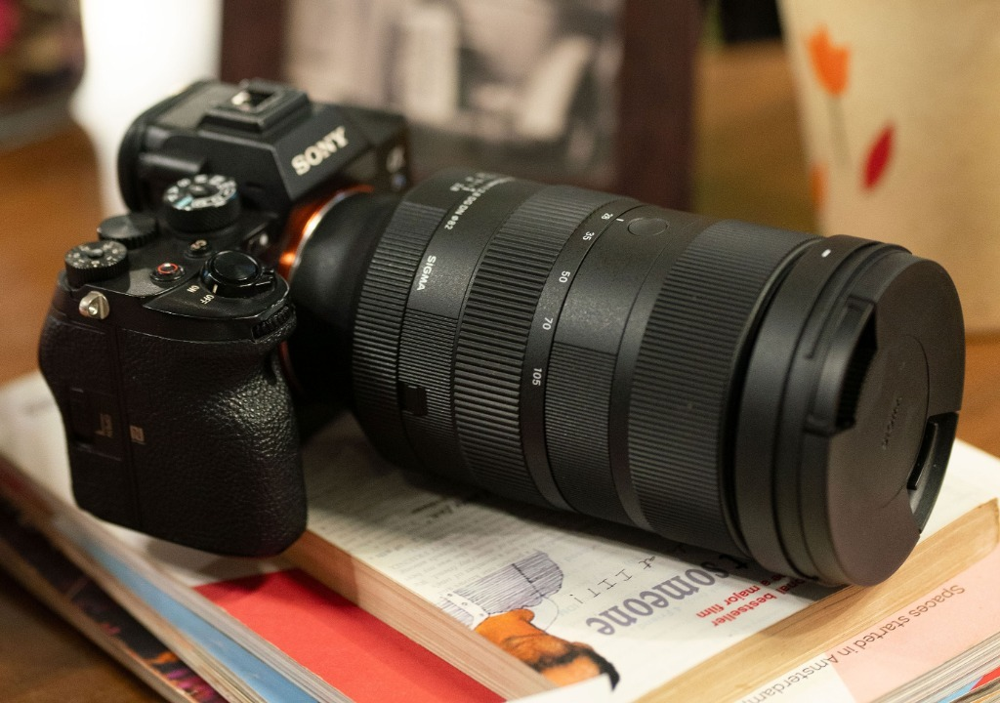

Sigma 28-105mm F2.8 DG DN Art
Introduzione
Era da tempo che desideravo iniziare a scrivere articoli anche sul mio sito e non soltanto per realtà esterne. Devo molto ai ragazzi di Toscana Photo Service e a Vanguard, che mi supportano fin dall'inizio di questo percorso, ma è arrivato il momento di raccontare anche qui la mia esperienza sul campo. E quale miglior modo se non affrontando uno degli interrogativi più stimolanti nel panorama delle ottiche moderne?
SIGMA ha inoltre avuto un ruolo cruciale nel mio percorso di crescita professionale: mi hanno guidato costantemente nello sviluppo sui canali social, dandomi tantissimi spunti, idee e soprattutto tantissime occasioni sul campo.
Perché proprio lui? Il grande dilemma storico
Fino a prima dell'uscita di questa lente, ogni fotografo di viaggio, reportage o paesaggio doveva rispondere ad un dilemma annoso quando componeva il proprio corredo: "Scelgo un 24-105mm f/4 per la portata focale o un 24-70mm f/2.8 per la luminosità?". In sintesi: preferire la luce o la flessibilità dello zoom?
SIGMA ha quasi totalmente risolto questa storica questione presentando un incredibile zoom ad apertura costante f/2.8 che spinge l'escursione fino a 105mm. Ma perché dico 'quasi'? Perché non abbiamo un 24-105mm, bensì un 28-105mm...

L'analisi del campo: 28mm vs 24mm
A me questi 4mm in meno a 28mm sono pesati sul campo? La risposta è: dipende dal contesto di scatto.
In ambito di eventi, cerimonie, ritrattistica e reportage dinamico, assolutamente NO. Anzi, la possibilità di passare da un 28mm luminoso ad un 105mm f/2.8 sfocando lo sfondo in modo pazzesco rende questo obiettivo una macchina da guerra imbattibile che permette di non cambiare mai lente.
In ambito landscape e fotografia di paesaggio puro, invece, SPESSO SÌ. Quei 4mm in più compresi tra 24mm e 28mm fanno una differenza enorme nella composizione quando si cerca di includere un primo piano imponente o cieli drammatici.
📊 Tabella: Copertura Focale & Utilizzo Specifico
| Focale | Angolo di Campo (Diagonale) | Resa & Valutazione sul Campo |
|---|---|---|
| 28 mm | 75.4° | Grandangolo moderato: eccezionale nei reportage, stretto per primi piani imponenti nel paesaggio |
| 50 mm | 46.8° | Prospettiva naturale perfetta con tridimensionalità e micro-contrasto elevatissimo |
| 70 mm | 34.3° | Passaggio fluido verso il medio-tele mantenendo la massima luminosità f/2.8 |
| 105 mm | 23.3° | Teleobiettivo puro a f/2.8: isolamento straordinario dei soggetti, vette e ritratti con bokeh morbido |
Perché si compra un 28-105 mm F2.8?
Si acquista per avere un unico obiettivo professionale per eventi, viaggi e ritrattistica capace di sostituire sia uno zoom standard sia un medio-teleobiettivo, senza mai rinunciare alla luminosità costante f/2.8.

Prestazioni diurne & nitidezza ad 82mm
La qualità ottica della serie Art è evidente fin dai primi scatti. Nonostante l'ampia escursione zoom fino a 105mm, la nitidezza a tutta apertura f/2.8 è uniforme da centro a bordo su sensori ad alta risoluzione. La ghiera del diaframma con click/de-click ed il diametro filtri da 82mm completano un profilo d'eccellenza.


Prestazioni notturne & flessibilità f/2.8
In notturna l'apertura costante f/2.8 garantisce un passaggio fluido tra la panoramica grandangolare ed i dettagli a 105mm mantenendo sempre gli stessi ISO e tempi di esposizione.


Diffrazione & controllo delle aberrazioni
La tenuta tra f/2.8 ed f/11 è di altissimo livello. Le lenti FLD e SLD correggono in modo impeccabile l'aberrazione cromatica ed il vignettamento anche a 105mm a tutta apertura.
Pregi, compromessi & perché preferisco il 24-70mm nel paesaggio
Il Sigma 28-105mm F2.8 Art è un'ottica eccellente e rivoluzionaria, ma nel mio lavoro di fotografo paesaggista preferisco comunque dare la precedenza al Sigma 24-70mm F2.8 Art II.
Questo non soltanto per i 4mm in più di angolo grandangolare a 24mm (cruciali nel paesaggio), ma anche per peso ed ingombri: nei trekking alpini impegnativi ogni grammo conta, ed il 24-70mm Mark II offre il bilanciamento perfetto per lo zaino da montagna.

✅ PRO
- Range 28-105mm ad apertura costante F2.8 unico sul mercato
- Sostituisce zoom standard e medio-tele per eventi e reportage
- Sfocato eccezionale a 105mm f/2.8 per ritratti ed isolamento soggetti
- Qualità ottica della serie Art impeccabile da centro a bordo
- Ghiera diaframmi fisica con de-click e pulsanti AFL personalizzabili
❌ CONTRO
- Partenza da 28mm invece di 24mm (limite per il paesaggio puro)
- Peso ed ingombro superiori al 24-70mm Art II nei trekking
Conclusioni
Il Sigma 28-105mm F2.8 Art rappresenta uno snodo fondamentale nell'evoluzione delle ottiche zoom. Per chi lavora con eventi, cerimonie o reportage di viaggio è uno strumento magnifico che libera dalla necessità di cambiare lente. Per il paesaggista puro, il 24-70mm f/2.8 rimane il compagno d'avventura ideale per respiro grandangolare e leggerezza.
Se vuoi provarli entrambi sul campo durante i miei workshop, sarà un piacere metterli a confronto direttamente sul tuo corpo macchina!